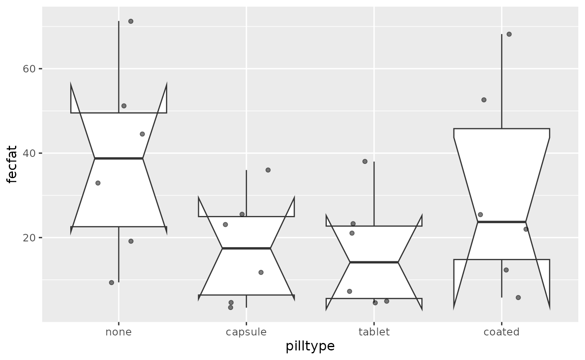

Session 9 lab exercises: Repeated Measures and Longitudinal Analysis I
Levi Waldron
Source:vignettes/session_lab.Rmd
session_lab.RmdLearning objectives
- Create and interpret a notched barplot
- Create spaghetti / line plots for grouped data
- Use
pivot_widerto create a wide-format dataframe - Do a manual ICC calculation
- Write a function
- Perform a permutation simulation
Exercises
Read the fecal fat dataset and convert pilltype and subject to factors
##
## Attaching package: 'dplyr'## The following objects are masked from 'package:stats':
##
## filter, lag## The following objects are masked from 'package:base':
##
## intersect, setdiff, setequal, uniondat <- read_csv("fecfat.csv") %>% mutate(pilltype = factor(pilltype, levels=c("none", "capsule", "tablet", "coated"))) %>% mutate(subject = factor(subject))
##
## ── Column specification ────────────────────────────────────────────────────────
## cols(
## fecfat = col_double(),
## subject = col_double(),
## pilltype = col_character()
## )Create a notched boxplot of the data.
library(ggplot2) ggplot(dat, aes(x=pilltype, y=fecfat)) + geom_boxplot(notch=TRUE) + geom_jitter(width = 0.2) + theme_grey(base_size = 12) + theme(legend.position = "none")
## notch went outside hinges. Try setting notch=FALSE.
## notch went outside hinges. Try setting notch=FALSE.
## notch went outside hinges. Try setting notch=FALSE.
## notch went outside hinges. Try setting notch=FALSE.
Interpret the notches. What is wrong with the usual interpretation in this example?
If the observations are independent (ie assumptions of a one-way AOV are met), notches can be used to visually perform a pairwise hypothesis test for difference of medians.
It’s wrong here because these are grouped / hierarchical data, and observations are not independent.
Make line plots for each subject, with and without subject mean centering
p1 <- ggplot(dat, aes(x = pilltype, y = fecfat, group = subject, lty = subject)) + geom_line() + labs(subtitle = "Raw data") + theme(axis.text.x = element_text(angle = 45, vjust = 1, hjust=1)) + xlab("Treatment") + ylab("Fecal Fat (mg/day)") + theme(legend.position = "none") p2 <- ggplot(dat, aes(x = pilltype, y = fecfatminusmean, group = subject, lty = subject)) + geom_line() + labs(subtitle = "Subject means subtracted") + theme(axis.text.x = element_text(angle = 45, vjust = 1, hjust=1)) + xlab("Treatment") + ylab("Fecal Fat (mg/day)") library(gridExtra)
##
## Attaching package: 'gridExtra'## The following object is masked from 'package:dplyr':
##
## combinegrid.arrange(p1, p2, ncol=2, respect=TRUE)

Convert to a wide-format dataset and remove the subject column
library(tidyr) dat %>% select(-starts_with("fecfatminus")) %>% pivot_wider(names_from =pilltype, values_from = fecfat) %>% select(-subject)
## # A tibble: 6 x 4
## none tablet capsule coated
## <dbl> <dbl> <dbl> <dbl>
## 1 44.5 7.30 3.40 12.4
## 2 33 21 23.1 25.4
## 3 19.1 5 11.8 22
## 4 9.40 4.60 4.60 5.80
## 5 71.3 23.3 25.6 68.2
## 6 51.2 38 36 52.6Write a function to calculate subject and residual variance and ICC of this dataset as a vector
ICCfun <- function(x) { fit2way <- lm(fecfat ~ subject + pilltype, data = x) subjvar_uncorrected <- x %>% group_by(subject) %>% summarize(MEAN = mean(fecfat), .groups = "drop") %>% pull(MEAN) %>% var() correction <- sum(residuals(fit2way) ^ 2) / 15 / 4 subjvar <- subjvar_uncorrected - correction residualvar <- sum(residuals(fit2way) ^ 2) / 15 ICC <- subjvar / (subjvar + residualvar) output <- c(subjvar, residualvar, ICC) names(output) <- c("subjectvar", "residualvar", "ICC") return(output) } ICCfun(dat)
## subjectvar residualvar ICC
## 252.6692760 106.9988878 0.7025066compare ICC for your original and simulated dataset
ICCfun(dat)
## subjectvar residualvar ICC
## 252.6692760 106.9988878 0.7025066ICCfun(datrand)
## subjectvar residualvar ICC
## 62.8746156 296.7935482 0.1748128